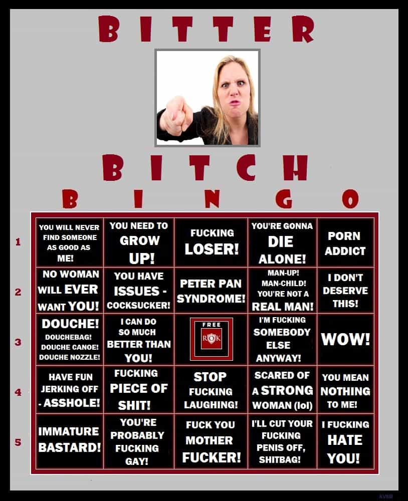

< < < Back
How To Handle Women With A Ticking Biological Clock – Return Of Kings
You’re a man on the verge of turning 30 or perhaps several years older. You’ve played your cards right throughout most of your adult life. You paid your dues in your younger years by building up your career or starting your own business. You regularly hit the gym and eat properly, resulting in a better physique than the majority of men around you at the same age. You’ve developed the necessary conversational skills not just with women, but people in general. You’re well liked and respected by your friends, family, and colleagues. Lastly, attracting women has never been easier for you at any point in your life. This phenomenon is commonly referred to as “having your shit together.” It’s a good feeling. You know what you’ve accomplished, you’re proud of it, and you have no plans on slowing down anytime soon. There’s just one problem, though—women around your age realize you have your shit together too.
Your life has entered the stage where the Biological Clock Ticker, or BCT, has you in her sights. These women are sketchy and you must exercise strong judgement when dealing with them. BCT’s can serve a vital role in the sex life of a guy pushing 30 or older. You will get some of your easiest lays from this demographic of single women. BCT’s are one of the perks of getting older. They allow you to slack a little bit in your efforts to get laid, but force you to step up your self preservation efforts at the same time. This article will focus on the type of women that can be classified as BCTs, and on the pitfalls that await should you accidentally knock one up or find yourself becoming attached in some way. By the end, you will understand their mission objective and, as a result, be cognizant of what actions to take in order to properly game them.
BCT Age Range: 28-36
When you’re in your early to mid-20’s, women come and go. They’re happy with the arrangement. Even if you were potentially interested in something more serious with them, they would have nothing of it. You know, it’s all about having fun, not getting tied down, and having a ‘go with the flow’ attitude. However, once women get around 28 years old, their mindset changes a bit. Women would like you to believe it’s because they’ve matured. That’s bullshit, of course—the only thing that’s maturing is their bodies, and it’s not the kind of maturing to get excited about either. They begin to realize their tits don’t have the same perky shape they once had, their asses are a little bit droopier and wider than they used to be, and their faces are beginning to show the signs of aging. They know time is starting to run out and they need to buckle down if they hope to find something serious before there are no good options left.
So, now that you’re in the same age range as the BCT’s, questions about “Where do you see this going?” or “Are you looking for something serious?” start popping in the early stages of dating. My initial thought is, “Yeah, I could be open to something serious… just not with the human equivalent of a set of tires with 80,000 miles on them.”
By 28 years old, a typical single woman’s past looks like this: she fucked a few dudes in high school, another 10+ during her college years, and then had a series of one night stands and mini-relationships in the five or six years following graduation. This gives her a partner count somewhere between 15 and 80. Does that sound like relationship material to you? Sure it does… if a dry spell has you to the point that you would fuck the crack of dawn and the fear of never finding anything better causes you to commit. For every year past 28 you can safely add a minimum of three new partners and, sadly, that’s being conservative.
Bear in mind that BTC’s past the age of 36 certainly exist, but for the purposes of this article will not be discussed. Why, you may ask? Because single women over 36 can go fuck themselves—that’s why.
BCT’s Are Generally Career Women
They’ve got the corner office that you don’t care about, the degrees and credentials they think will impress you, and the job title they think gives you a raging boner—you know, stuff men couldn’t give two shits and a greasy fart about. Sure, on a personal level their accomplishments are commendable. I respect any person, male or female, that puts in some serious effort to make something of themselves (if it was, indeed, truly earned and not a byproduct of some sort of “effective hiring quota”). However, a woman’s career has never made a man more attracted to her. In fact, when a man hears a woman talk about how she’s such a pipe swinging bad-ass at the office, he will immediately wonder how long it will be until she’s a complete pain in his ass if she’s allowed to stick around long enough. Luckily, since she’s a BCT, she won’t be sticking around for very long.
These women are following the teachings of their feminist masters to a T. They lived their lives much in the same way a man would. They went to college, got educated, landed a job, started making a bit of money, established themselves, and now that they’re older have decided to start a family and ‘have it all’. Unfortunately, there is no such thing as ‘having it all’. Most women with full-time careers coupled with the responsibilities of full-time motherhood get burnt out. Among divorced couples where both partners have a college degree, 90 percent of those divorces were filed by the woman—clearly not worth the risk. Especially, when in my personal experience, the difference between a career woman and a bartender is the career woman talks about her job for 20 minutes before she talks about Facebook and Real Housewives of Wherever-the-Fuck.
BCT’s aren’t always career women, but this is generally the case. Most “good girls” that are truly interested in having families and getting married do so at a younger age. Recovering party sluts and divorced women who didn’t have children with their ex-husbands can certainly be classified as BCT’s. Single mothers can also exhibit a lot the traits listed here as well, but single mothers are like single women over 36, and can go fuck themselves.
BCT’s Ask About Your Job Or Income
BCT’s want to make sure the man they’re planning on locking down has a stable career with a good income. There’s nothing wrong with that and it’s understandable. The problem is, as previously stated, they are career women (if they’re not career women then they’re just gold diggers). The vast majority of these women, despite their careers, are massively ridden with debt: student loans, typical bills, and credit cards. It’s no big secret that women absolutely love blowing their money on things they don’t need. You know those commercials for $30 skin cream that will reduce the effects of aging by 10 years in just a couple weeks? It’s not men buying that stupid shit, that’s for sure.
“No problem, they have their own money”, you may be saying to yourself. Wrong, it’s a huge problem and here’s why. There’s a lot of excellent material written on the subject of hypergamy out there. However, there’s also a simple explanation for women’s tendency to “marry up”— they want a safety net just in case they decide they don’t want to work anymore. Despite all the feminist propaganda out there, many women do not want to go back to work after they have a kid. Many women that claim to love their careers are straight-up fucking lying to you— what else are they going to say? The truth? We’re talking about women here, fella’s. If she openly brought up the subject of not wanting to work, yet was loaded with debt—even the most desperate men would balk at that. The fact is many women are completely miserable working for a living. So guess what? She pops out a kid and makes the unilateral decision that she’s going to stay at home and there’s not a fucking thing you can do about it.
So where does that leave you? Well, you know that 70 grand in student loan debt for her bachelor’s and/or master’s degrees? Hope you like paying off degrees that aren’t yours when you could have a new Mercedes, a pimpin’ boat, or just save it for retirement. Chances are also pretty damn good that her irresponsible ass deferred those student loans—compounding the interest and creating even more debt. What about that $2,000 trip to Cabo with her girlfriends that she charged on her Mastercard? Hope you like paying off a vacation you didn’t go on and where she fucked men that weren’t you.
On the flip side, if a woman is hellbent on going back to work, you have to question how good of a mother she would be. It really is a double-edged sword. You’re either cleaning up her massive financial mess or your infant son or daughter is going to be raised by strangers at a daycare. Neither situation is ideal. In fact, both situations are pretty fucking terrible, to be quite frank.
BCT’s Try To Hasten The Progress Of Your Relationship
So you slept with a BCT on your first or second time out together. You’re on the third date with her when she says, “I really want an exclusive relationship.” You then say to yourself, “Ha! Fuck you, lady!” I’ve experienced this a few times in the past couple years and it still makes me laugh… in their faces. Be very cautious when you’re dealing with someone that isn’t allowing your relationship to progress at a natural and organic pace—they’re rushing shit for a reason. They’re BCT’s and they’ve got a schedule to keep. If you’re not going to be the one that jumps at the opportunity to completely fuck up your life by getting serious with one of these women, then they’re going to move right along to a guy that will.
BCT’s Talk About Babies
No surprise here, but it should be mentioned. If a woman is talking about how much she wants a kid within the first couple times you’re out together—be on red alert. BCT’s want a baby and they want it soon. In many cases these women don’t care if the man is in the picture or not. All that matters is if he can pony up the cash to support it.
Always use condoms that are provided by you and are not nearing the expiration date—settle for a blowjob if you don’t have condoms. If she has condoms of her own and offers you one, then go for sex if you have time to discreetly inspect the unopened wrapper in good lighting. If that’s not feasible, then just pull-out despite the fact you’re wearing a condom, just to be on the safe side.
If a BCT says, “Don’t worry about it, I’m on the pill.” your exact thought process should be, “I need to worry about this, this bitch isn’t on the pill.” These women simply cannot be trusted. Make sure to take extra special precautions with this type of woman. No man wants to be on the hook for a 216 payment child mortgage in exchange for a 10 second orgasm. Don’t be that guy.
The BCT Vernacular
BCT’s have their own dating lingo. As is standard with women, what they say and what they really mean are generally two very different things. The following is a short list of commonly used phrases popular amongst BCT’s and the translation to what they really mean.
“I’ve had my fun and now I’m ready to settle down.”
Translation: I’ve been on the express train to pound town for roughly 15 years with countless men. Now that my looks are deteriorating and my family is asking me, “When are you going to find a nice guy and start a family?” I’ve finally decided that I will try to nail down some unfortunate son of a bitch and drain him of his resources, happiness and ultimately, his soul. Short version: I’m a whore.
“I know that I’m going to make a great mom someday.”
Translation: I think being selfish, vapid, and on anti-depressants in conjunction with drunken hookups and working eight hours a day in an office environment has somehow properly prepared me to raise children.
“I’m at an age where I’m just sick of the drama.”
Translation: I love drama. In fact, it turns me on and I can’t live without it. The truth of the matter is that I’m really a 14 year old girl trapped in an adult woman’s body. I cause all of the drama in my life because I’m a juvenile pain in the ass and I want everyone around me to know it. You, as a man, better provide me with ample amounts of drama or else you will be considered boring and I won’t want to fuck you. I might marry you and have kids with you, but rest assured, I will be divorcing you down the road and taking half your shit.
“It’s so hard to find a guy that’s looking for a serious relationship.”
Translation: I perpetually disqualify myself as relationship material through an unwillingness to clean, an inability to cook, and by being an entitled bratty bitch. I also chase men that clearly have no interest in settling down even though I clearly understand they’re not serious from the onset. However, I will continue blaming men for my piss-poor decisions and will make absolutely no effort to change my ways. As a result, I will continue with the status quo of being fucked and discarded due to my actions and deficiencies.
“I’m really looking for a guy that just ‘gets it’.”
Translation: I’m looking for a janitor to mop up the explosive diarrhea shit-mess that I call my fucked up life.
How To Game A BTC
In my experience, the best way to get into a BCT’s pants is to insinuate there’s a possibility for something serious without ever actually saying it. It gives them the chance to chase you a bit and work towards roping you in. The ambiguity of the situation will drive her crazy and she’ll use her vagina as a means of trying to get commitment out of you. You want her to be unsure if you’re a good guy or an asshole—operate between the two.
Remember, she’s still a slut and she’ll respond to your asshole wit and charms by wanting to sleep with you, but her new-found husband hunting goals might be holding her back. She may be saying to herself, “Oh, I won’t fall for this shit again.” This is especially true if she’s been dating for a while and trying to get guys to commit, but keeps falling victim to a nail and bail. Ultimately, she will fall for that shit again because she can’t resist what she likes. How long you want to keep her around is your decision. These women tend to be good about splitting bills and paying for stuff if they’ve gone out with you a few times. Your out of pocket cost per lay can be very low if you decide to keep one around for a bit.
The average lifespan of a BCT fuck-buddy arrangement is between one to three months. If you haven’t committed to her by that time frame then she’ll be gone, and will most likely be out with a new man within a week. That is if she wasn’t fucking a different guy already.
BCT’s have a tendency to not go quietly either, in my experience. To make the process of removing a BCT from your life more enjoyable, I’ve put together a little game for the ROK readership. Feel free to play along as she makes her exit.

In Closing
BCT’s can make great fuck-buddies—they’re eager to please, but always keep it in the front of you’re mind that they’re dangerous and not genuine. They’re trying to charm you and get you to fall in love with them and, due to their high mileage, tend to know what they’re doing in bed. These women are not for loving. Just because a woman wakes up one morning and decides that she wants to be a mommy and a wife doesn’t somehow make her qualified for the job. They’re qualified for the same thing they’ve always been: getting fucked and working a job in a perfectly air conditioned building. That’s it.
If BCT’s were of any true value, they would be in a long-term relationship already. Any reasonably attractive woman over the age of 28 has passed up numerous opportunities to be with a great guy. As established, BCT’s tend to have major problems. It’s not your responsibility, as a man, to play mechanic and fix the problems these women have created for themselves—you will not be rewarded for your efforts. There are plenty of men just around the corner that are more than willing to give these women exactly what they want. Let those guys adopt these bitches from the pound and give them a nice home with plenty of food, water, and chew-toys. A sucker is, indeed, born every minute. However, you know and understand the utility of these women. You can take great pride in knowing that sucker will never, and can never, be you.
Once you have established yourself as a man of worth by your mid-30’s these women will not leave you alone. By being in shape you will have a look they find aesthetically appealing. Through years of experience with women from the past you will have an attitude and personality they find themselves drawn to. And finally, through hard work and dedication from building your career, you will have a wallet that they would love to get their filthy little dick beaters on. In player lingo, you will have the alpha sex appeal they lust for coupled with the financial security of a Beta—a truly unstoppable combination not just for attracting a BCT, but for attracting all women.
Read More: Why There Is No Escaping The Biological Clock


{kind=link}
{kind=link}
{kind=link}